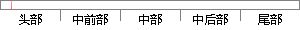

2 嵌入式操作系统的现状与分析
片段位置图

相似结果
相似片段：2.论文通过对AutoOSEK操作系统各模块和OSEK标准对比,分析了AutoOSEK中存在错误处理....1 1.2汽车电子嵌入式操作系统发展现状和趋势???..2 1.2.1汽车电控单元OSEK...
| 标题 | 《汽车电控单元嵌入式实时操作系统AutoOSEK内核的设计与优化》 |
| 对比库 | 中国学位论文全文数据库 |
| 作者 | 邢雪梅 |
| 机构 | 重庆邮电大学 |
| 分类 | 控制理论与控制工程 |
| 年份 | 2011 |
| 相似率 | 100% （严重抄袭） |
※ 片段修改建议 ※
近似词参考：- 现状：近况
- 分析：阐发 阐明 剖析
系统自动生成语句：2 嵌入式操作系统的近况与阐发
注：本片段修改建议为系统自动生成，仅供参考。